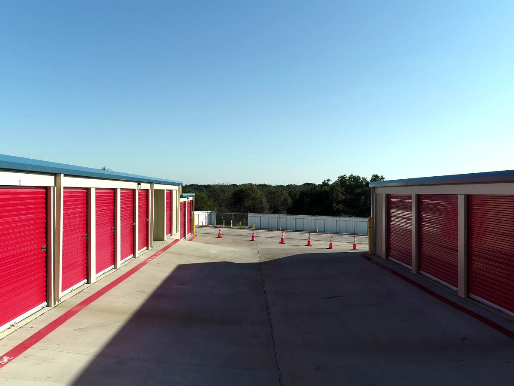
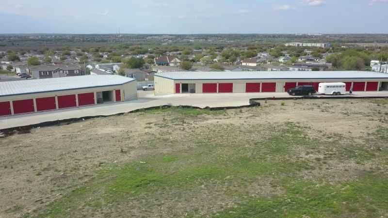

Storage is pleased to be your go-to, neighborhood resource for momentary and irreversible storage needs in,. I have made use of many various other storage facilities in Texas, however this is the most effective.
Aaa storage -
live music
creek
years
blanton museum
museum
The auctions/sales are open to the general public, with most bidders buying for the purpose of reselling for profit. Snap a photo for your Instagram at various murals in Austin, Hi, How Are You, Don’t Mess with Texas, i love you so much, and Greetings from Austin are some of the popular murals located in downtown and Central Austin. Official Austin Tourism Guide if you are looking for museums, Austin has The Blanton Museum of Art which consists of European paintings and contemporary American and Latin art, Bullock Texas State History Museum located across the Blanton, and Texas Memorial Museum, Austin’s first science museum including dinosaurs, fossils, and science exhibits. Austin Texas storage .
Look for facilities that offer 24-hour surveillance, gated access, and secure locks on the units. Dimensions are based on exterior measurements. RVs, on the other hand, require a significant amount of space, and while outdoor covers can offer basic protection, an enclosedLook no more than AAA Storage if you're searching for a self-storage facility that supplies the finest value in regards to availability, cost, and safety.
From Downtown to East Austin, there's no better nightlife than Austin. You can select the perfect storage facility by utilizing the adhering to tips. In addition to technology, the clinical and education markets are continually growing too.
COVID altered top priorities for several and people chose to relocate to a new area to start over. Climate-controlled storage units have mechanisms in place to regulate humidity and temperature, keeping the interior rooms either cold or hot as needed. Take a picture of among the numerous murals in Austin for your Instagram account.
Space Grace: Making Room in Your Life with Storage
The 10x10 option is a modest to larger unit size and is taken into consideration the typical size for storage. You can examine online testimonial websites like Yelp or Google to see what others are claiming regarding the center. When it comes to customer care and fulfillment, the group here is unparalleled in terms of friendliness, professionalism and trust, and depth of knowledge. Business and Economy in Austin We have been fortunate enough to call Austin, Texas, home.
If you live in a non-tax state, your take home pay is higher (for our family it was 10% less! ). My husband and I have lived in Portland and New York City, but Austin has been the only place where we've felt truly at home socially. Austin, the pulsing center of the Hill Country, lies stashed on the financial institutions of the rumbling Colorado River.
Austin, Texas is a city that we have been lucky enough to call our own. The purchaser of an unit seizes its entire materials and is accountable for removing them within a collection time period. Barton Springs Swimming pool, situated in Zilker Metropolitan Park, is full of refreshingly cool waters from a natural, underground spring-- and swimming here is hugely popular with the residents.
Cars, boats, motorcycles, heavy equipment, and recreational vehicles can all be safely stored with outside vehicle parking. Check online reviews to learn about the customer sevice and amenities offered by the facility.
Aaa storage - austin visitor center
congress avenue
austin visitor center
city of austin
bird
live music
In 2018, Oracle left California for the Texas highlands, but it wasn't until 2020 that the company made Austin the official location of its new headquarters.
Since most, if not all, of these facilities are inside units, they are frequently climate-controlled. It's no wonder people love it and move there in droves. Throughout the year, you can find numerous food-focused events, consisting of The Texas Month-to-month Barbeque Feast, The Austin Food & A Glass Of Wine Festival, and Live Fire!
Wondering what to do in Austin, Texas?
Aaa storage - bird
bird
live music
creek
years
blanton museum
Do not skip this special offer, which finishes soon!
In Austin, live songs exists anywhere you look. Security is of utmost importance while preserving vital paper records.
The friendliness and helpfulness of locals is, without a doubt, the best part of living in Austin. I'm in the procedure of decluttering our residence in Pennsylvania while we get it on the market below.
At Woman Bird Lake in midtown Austin, take in the daybreak and sundown.
Aaa storage - bird
congress avenue
austin visitor center
city of austin
bird
According to research performed in 2021, Austin, Texas is the 4th most attractive city for young adults. In order to differentiate themselves from competition, owners of self-storage facilities often offer amenities like climate-controlled storage, outside storage for RVs and boats, and lighting or power outlets inside the storage unit in addition to 24-hour access. That has been replaced by multiculturalism which is developed to separate.
The warmth and kindness of residents is-- hands down-- my favorite aspect of living in Austin. Having established that, let's proceed at once! Are you trying to find the trendiest or hippest area in Austin?
The fun doesn't stop at the water. Our online portal allows you to make payments, check your account balance, and manage your unit from anywhere with an internet connection. Among my favorite aspects of residing in Austin is this. SXSW Festival in Austin
Among the most costly living expenditures in Austin? Also, I would certainly add, I believe Austin is good for younger people searching for work. Plus, live music pours out of bars and clubs every night of the week throughout the city Austin is almost always a stop.
The Benefits of Drive-Up Storage Units
Storage provides high-quality, spotless, reasonably priced storage facilities in a range of sizes, along with parking choices and climate-controlled apartments. Austin's Bicycle Program functions to make the city bike-friendly and consists of a great deal of bike lanes. Whether you're moving in-state or considering long-distance moving companies in , we're here to help.
Aaa storage - congress avenue
city of austin
bird
live music
creek
There are about 40 distinct songs events kept in Austin each year, which is almost one weekly usually! Pros and Cons of Using Self Storage for Paper RecordsMost climate-controlled units will maintain a temperature of somewhere between 60 to 80 degrees Fahrenheit for your unit.
Many Austinites are incredibly type and inviting and meet the friendliness the south is understood for. In the damp and mucky summertime, allergies are extra typical; if you struggle with allergic reactions, recognize this.
Somebody needs to do a YouTube article of every one of the encampments and people oversleeping alleys, parks, and much more. It takes means as well long to travel around the downtown core even without web traffic.

Shelf Aware: Conscious Choices for Storage Solutions
As you wander through the city of Austin, you are likely to see residents wearing t-shirts that say “Welcome to Austin – Please Don’t Move Here.”Facilities owners are generally required to first notify the tenant of the outstanding debt, commonly by certified or registered mail to the address on file with the facility. Location, size, and amenities like air conditioning all affect the price. The price of a building primarily depends upon its size when contemplating rental housing.
Some of one of the most popular murals can be found in downtown and Main Austin and consist of Hello, How Are You, Do Not Tinker Texas, I Love You A Lot, and Greetings from Austin. On the various other hand, a facility with less hours could function if gain access to is rare.
The three largest Independent Institution Districts in Austin Independent College District, Round Rock Independent School Area, the Leander Independent School Area. I've told my family and friends regarding it.
Austin is known as the Live Music Capital of the World since it is home to more than 250 live music venues. I had questions about which size I needed and if I would need climate control.
Transitioning from a House to an Apartment: Storage Solutions
We are currently enjoying all of the Blue Ridge Mountains' trails, the four distinct seasons, and the mountains of north Georgia.
Aaa storage -
austin visitor center
city of austin
bird
live music
Now in the second decade of the 21st century, this progressive Southern city has only strengthened its reputation as a tech hub, fortifying the leisure + hospitality industry and bolstering the name of Austin in the creative & design universe. This is a city that marches to its own beat-- the Lone Star State's spotlight.
In fact, there are tons of Austin festivals throughout the year that celebrate the city’s wide range of ethnicities, religions, identities, lifestyles, and cultures.*In contrast to what our Customer Care Team charges over the phone. Here are some concrete procedures to aid you make an informed decision if you're thinking about using self storage for your paper records:Price: Self storage can be pricey, specifically for larger or climate-controlled centers.
Self-storage facility drivers often give 24-hour access, climate controlled storage, outdoor storage for RVs and boats, and lights or power outlets inside the storage unit as features to set themselves aside from competitors. Protection is of utmost significance while preserving essential paper documents.
Austin's forecasted task development over the next ten years will certainly expand by 47 percent with firms like Google and Tesla clearing up in. Before you move, we encourage you to thoroughly research neighborhoods in Austin to see which location has the right amenities and resources for your family.

What size storage unit is required for an Austin, Texas, apartment with two bedrooms?
We advise choosing storage unit sizes between 5x10 and 10x10 for a one-bedroom house. We advise storing units in multi-bedroom homes with dimensions between 10x15 and 10x30. Give the AAA Storage staff in Austin, Texas a call right now if you need assistance determining the appropriate unit size!
Does Austin, Texas, require climate-controlled storage?
We advise using a climate-controlled storage unit in Austin, TX if you're worried that delicate items may get destroyed in self storage. To assist protecting objects from drastic temperature fluctuations, these devices usually keep temperatures between 55 and 80 degrees throughout the year.
In Austin, Texas, where may I keep my RV or boat when not in use?
Larger units, especially made to keep your car safe and in top shape until you need it again, are available to clients at these facilities. In addition to possibly freeing up a sizable amount of space in your garage or driveway, you won't have to worry about long-term parking fines, damage, or theft.
What is the size of a 10 by 10 storage unit?
A 10 � 10 storage container is comparable in size to a larger walk-in closet. It can easily fit a one-bedroom apartment's worth of belongings, including a few boxes, electrical devices, furniture, mattress and spring box sets, and other items.